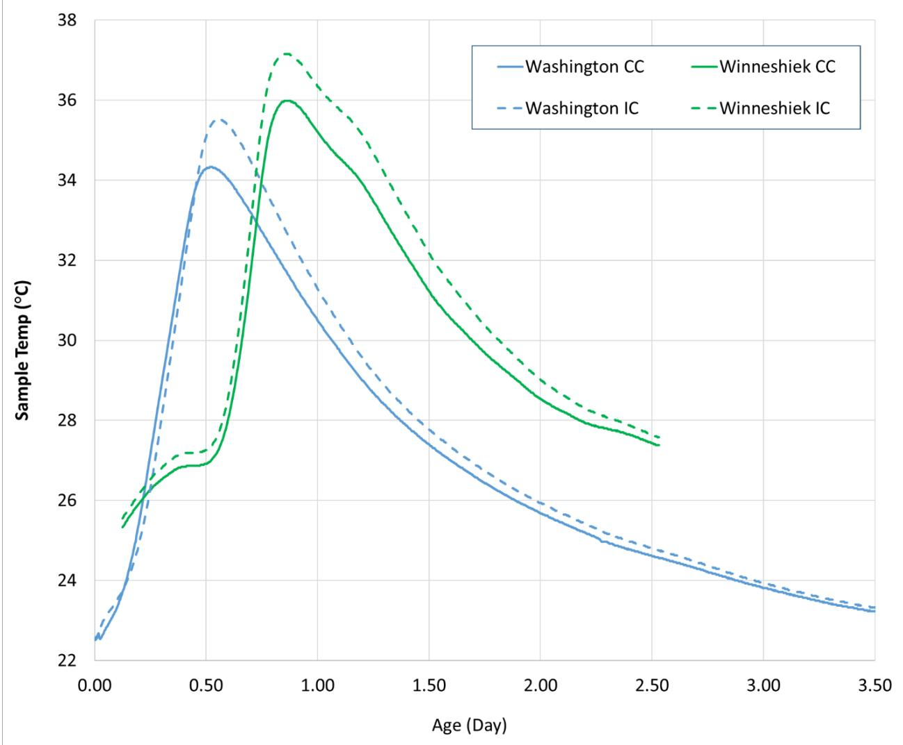
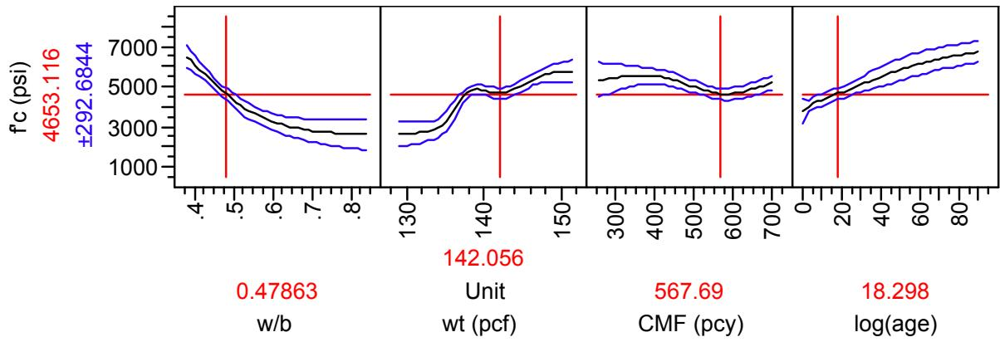

Degree of Hydration
Degree of Hydration is a specific measure within Cement Hydration that quantifies the extent to which cement has chemically reacted with water [5]. It is proportional to the amount of non-evaporable (chemically bound) water in a cement paste and directly determines the volume of solid hydration products formed, as these products gradually fill pore spaces during the process [5]. Consequently, for specimens with identical materials and mix proportions, the resulting pore characteristics are primarily controlled by this degree of hydration at a given age [5], making it a key indicator of curing effectiveness.
Sources (14)
Measurement Methods
Furnace Method
Samples are heated to 105°C (for evaporable water) and then to 1000°C (for non-evaporable water). The difference gives the chemically bound water content:
α = [(W₁₀₅ - W₁₀₀₀) / (0.24 × W₁₀₀₀)] × 100%
Where 0.24 is the theoretical ratio of non-evaporable water to cement at full hydration. Simple and inexpensive.
Thermogravimetric Analysis (TGA)
Samples are heated at a controlled rate (e.g., 10°C/min) in an inert atmosphere while weight loss is continuously recorded. More precise but requires expensive equipment.
- Furnace and TGA measurements show strong linear correlation (R² = 0.90)
- Furnace method gives slightly higher values than TGA
In FHWA Project 17 Phase II (wang-2007-simple-rapid-test-heat-evolution-phase2), degree of hydration was determined from both isothermal and semi-adiabatic calorimetry data for input into HIPERPAV. A significant difference was found between DOH from semi-adiabatic vs. isothermal methods — likely from inaccurate total heat of hydration estimates (models used rather than ASTM C 186). Twenty-four hours of calorimetric data could approximate 7-day DOH in HIPERPAV when using adjusted reliability (60% vs. 50%). [1]
 AdiaCal calorimeter unit [1]
AdiaCal calorimeter unit [1]
The degree of hydration can be calculated from calorimetry data by dividing the accumulated heat evolved at a specific time by the total heat of the cementitious material. [2]
 Exponential equations to approximate P vs. Q [2]
Exponential equations to approximate P vs. Q [2]
Hydration parameters back-calculated from semi-adiabatic tests provide a better match to actual pavement temperatures than those derived from isothermal tests. [2]
 Predicted pavement temperatures versus measurements (pavement top, Alma Center, WI ) [2]
Predicted pavement temperatures versus measurements (pavement top, Alma Center, WI ) [2]
The derivative of the semi-adiabatic temperature curve can estimate setting times, where the maximum of the first derivative correlates to final set and the maximum of the second derivative correlates to initial set. [1]
 Determining initial set time from the derivatives method [1]
Determining initial set time from the derivatives method [1]
Calorimetry and thermogravimetric analysis (TGA) tests confirm that mixtures containing SAPs experience increased cement hydration, likely due to the additional water provided by the polymers. [3]
 TGA results of cement paste samples at 7 days [3]
TGA results of cement paste samples at 7 days [3]
Scanning electron microscopy (SEM) analysis with image processing can quantify the degree of hydration by estimating the percentage of un-reacted cement particles in binary images of concrete microstructures. [4]
Semi-adiabatic calorimetry can monitor hydration rates for the first 72 hours, showing that internally cured samples maintain higher temperatures than conventionally cured samples after initial hours. [4]

Calorimetry strength test results (psi) [4]Factors Influencing Degree of Hydration
The degree of hydration in concrete specimens typically follows a depth profile where the middle section exhibits the highest values due to retained moisture and temperature, while surface areas show lower hydration due to heat loss and moisture evaporation [5]. Curing compounds significantly improve the degree of hydration [5], with high-efficiency compounds producing higher hydration than low-efficiency ones [5]; specifically, in hot weather conditions, applying a high-efficiency-index curing compound as a single layer is sufficient for proper hydration, whereas low-efficiency compounds require double-layer applications to significantly increase the degree of hydration [5]. Extending moist-curing periods is a direct method to increase the degree of hydration in concrete mixes, which subsequently reduces permeability and enhances freeze-thaw durability without requiring air entrainment [6]. A high degree of cement hydration increases the concrete mix temperature, which can induce positive temperature gradients during summer construction and negative built-in temperature differences at night when the surface cools but the bottom remains hot [7]. Furthermore, while the inclusion of internal curing agents does not affect the maturity of concrete because the cementitious system controlling maturity remains unchanged despite variations in hydration levels [4], various factors influence these processes. Adding water reducers and fly ash replacement increases the activation energy of the cementitious materials [2], and the addition of supplementary cementitious materials reduces the overall degree of hydration, with fly ash causing a 12 percent decrease and GGBFS causing up to a 30 percent decrease when combined with fly ash [8].
 Effect of Curing Compound on Degree of Hydration—Air Curing [5]
Effect of Curing Compound on Degree of Hydration—Air Curing [5]
The kinetics of hydration are significantly influenced by the water-to-cement ratio, where lower ratios exhibit higher initial heat evolution rates before the peak, while increasing the ratio postpones the peak value by approximately three hours when shifting from a w/c of 0.35 to 0.5 [1]. Cement type also plays a role, as Type III cement exhibits shorter set times due to its higher surface area accelerating hydration at particle surfaces, whereas slag-containing cements like ISM show delayed set times with approximately 10- to 20-minute delays for each 10% addition of slag [1]. Additionally, different fly ash sources produce distinct heat evolution curves even at identical replacement levels; for instance, fly ash from source O demonstrates the highest initial hydration rate, while sources B, L, and K exhibit collapsed second and third peaks [1]. Mixing methods also impact results, as high shear mixing consistently yields a higher degree of hydration than Hobart mixing by an average of approximately 6 percent due to more complete breakdown of cement agglomerates [8].
 Effect of cement type on heat of hydration [1]
Effect of cement type on heat of hydration [1]
Complete hydration generally requires a water/cement ratio of approximately 0.4 to 0.42, as hydration ceases when internal relative humidity drops below 80% or when insufficient water remains to form saturated C-S-H gel [9].
Internal Curing Mechanisms
Internal curing, utilizing prewetted lightweight fine aggregate (LWFA) or superabsorbent polymers (SAPs), increases the degree of hydration by supplying water from within the concrete matrix [10]. This method is particularly effective in low w/cm ratio mixtures where external curing penetration is limited [10]. By mitigating self-desiccation—which occurs when high degrees of hydration consume available water and lower internal relative humidity—internal curing reduces autogenous shrinkage [10]. Furthermore, the process increases the degree of hydration and reaction of supplementary cementitious materials, thereby reducing concrete porosity and improving durability [10].
 Conventional curing compared to internal curing [10]
Conventional curing compared to internal curing [10]
To offset chemical shrinkage and maintain hydration, the amount of internal curing water required is typically estimated at 7 lbs per 100 lbs of cementitious materials [10]. Because only free water influences the pore structure and porosity of the cementitious matrix, the absorbed water in LWFA or SAPs does not contribute to the w/cm ratio calculation [10]. For internally cured concrete, the maximum w/cm ratio is typically limited to 0.42, and delivered material is required to be within +/- 0.025 of the target [10].
Superabsorbent Polymers (SAPs) in Concrete
The incorporation of super absorbent polymers (SAPs) into pervious concrete mixtures can increase the degree of hydration by 16% under low relative humidity conditions, as the SAP holds additional curing water and provides sacrificial moisture for evaporation [11]. By absorbing additional mix water before setting—water that is not considered in the w/cm ratio determination—SAPs can be used as an internal curing agent [10]. This addition to concrete mixtures can increase the degree of hydration by providing internal curing water, a process that is particularly effective in low w/cm ratio mixes where external curing penetration is limited [3]. Furthermore, SAPs with higher cross-linking densities exhibit larger absorption capacities, allowing them to retain more water for extended periods and release it gradually to promote sustained cement hydration [3]. Even in hardened concrete, SAP particles can regain their swollen state when rewetted, indicating that their internal structure remains intact and capable of releasing stored moisture to support ongoing hydration processes [3].
 Absorption of various SAPs in cement pore solution [3]
Absorption of various SAPs in cement pore solution [3]
However, the use of SAPs involves certain performance trade-offs. Incorporating dry SAP particles into concrete mixtures is less detrimental to overall performance than using presoaked SAP, as dry SAP allows for better control over the effective water-to-cement ratio during mixing [3]. Conversely, SAPs can delay both initial and final setting times in concrete, which is attributed to a potential increase in the effective water-to-cement ratio resulting from insufficient water absorption by the polymer during the mixing phase [3]. Additionally, the presence of SAPs in concrete can lead to lower compressive strength and resistivity values compared to control mixtures, primarily because not all added water is absorbed by the polymer, leaving behind pores that increase matrix porosity [3].
 shows the compressive strength results of all concrete mixtures at 28 days, including those made with dry and presoaked SAPs. Figure 3.17. 28-day strength of concrete mixtures [3]
shows the compressive strength results of all concrete mixtures at 28 days, including those made with dry and presoaked SAPs. Figure 3.17. 28-day strength of concrete mixtures [3]
Lightweight Fine Aggregate (LWFA) for Internal Curing
Replacing approximately 30% of the fine aggregate volume with LWFA having ~20% absorption can provide an internal curing water volume equivalent to the chemical shrinkage of a typical cement [10]. For internal curing, LWFA is preferred over coarse LWA because it provides improved particle spacing at lower substitution rates, which allows water to be drawn more rapidly and uniformly throughout the paste [10]. Furthermore, LWA used for internal curing should have a minimum 24-hour absorption of at least 15%, a value upon which design assumptions are often based [10].
However, preconditioning LWFA represents a significant logistical challenge, as particles need to be close to saturated before batching and reaching saturation may take several days [4].
Microstructural and Physical Implications
Sorptivity in cement paste is primarily governed by the degree of hydration because the process gradually fills pore spaces with hydration products, making sorptivity a sensitive indicator of curing effectiveness [5]. Similarly, in pervious concrete, the hardened oven-dry unit weight serves as an indicator of curing effectiveness because more complete hydration results in greater chemical binding of water and higher density [12]. Scanning electron microscopy confirms that high shear mixing produces a significantly lower percentage of unhydrated cement particles compared to low shear mixing methods [8]. While internal curing improves the interfacial transition zone (ITZ), which contributes to enhanced mechanical properties and durability of concrete [4], higher degrees of cement hydration aggravate self-desiccation, leading to a uniform reduction of internal relative humidity throughout the concrete thickness and causing autogenous shrinkage; this volumetric reduction can macroscopically manifest as joint contraction in pavements [7].
 Effect of Curing Compound Application and Curing Condition on Sorptivity [5]
Effect of Curing Compound Application and Curing Condition on Sorptivity [5]
In high-strength concrete with very low water-to-binder ratios, proper curing ensures that all available water is consumed for cement hydration, filling pore spaces to create an impermeable matrix where internal pore water cannot freeze at ordinary ambient temperatures [6]. Regarding strength modeling, the coefficient ‘s’ in strength prediction models varies by cement type, taking a value of 0.20 for high early strength cements, 0.25 for normal hardening cement, and 0.38 for slow hardening cements [13]. Additionally, artificial neural network models can predict compressive strength from chemical composition and 1-day accelerated strength data, providing results comparable to maturity tests when sufficient database sizes are available [13].

Prediction profile on compressive strength from ANN analysis [13]Durability and Performance Effects
The drained freeze-thaw test method provides a more accurate simulation of deicer damage in pervious concrete than fully immersed tests, as it accounts for the material’s high permeability and prevents excessive saturation [12]. To protect against deicer salt scaling without inhibiting the photocatalytic self-cleaning properties of the cement paste, soybean oil can be used as an alternative curing compound for pervious concrete to reduce moisture loss [11]. Furthermore, the degree of hydration directly influences chloride resistance, as increased hydration reduces the charge passed in rapid chloride permeability tests by creating a more tortuous capillary pore network [14].
Superabsorbent polymers (SAPs) can effectively reduce early-age shrinkage in concrete by retaining water within their structure, which enhances internal moisture levels and minimizes shrinkage stresses during the critical early curing period [3]. Additionally, SAP mixtures exhibit less slump loss over time compared to control mixtures, as the swollen polymer particles release water under vibration or during the curing process, maintaining workability and hydration potential [3]. Similarly, internal curing using lightweight fine aggregate (LWFA) improves concrete hydration for approximately one month after placement, as evidenced by higher surface resistivity values at ages greater than 7 days compared to conventionally cured samples [4]. This internal curing also reduces temperature and moisture differentials within concrete systems, which directly decreases slab curling and warping tendencies in pavements [4]; consequently, life-cycle cost analyses indicate net savings with internal curing technology due to predicted reductions in maintenance costs resulting from improved permeability [4].
 Drying shrinkage and autogenous versus concrete age in conventional concrete (left) and high-performance concrete (right) after internal curing [3]
Drying shrinkage and autogenous versus concrete age in conventional concrete (left) and high-performance concrete (right) after internal curing [3]
See also
References
- K. Wang, Z. Ge, J. Grove, J. M. Ruiz, R. Rasmussen, and T. Ferragut, "Simple and Rapid Test for Monitoring the Heat Evolution of Concrete Mixtures, Phase 2," Center for Transportation Research and Education, Ames, IA, 2007. [Online]. Available: https://www.intrans.iastate.edu/wp-content/uploads/2018/03/calorimeter.pdf
- K. Wang, J. M. Ruiz, J. Hu, Z. Ge, Q. Xu, J. Grove, and R. Rasmussen, "Simple and Rapid Test for Monitoring the Heat Evolution ..., Phase III," National Concrete Pavement Technology Center, Ames, IA, 2008. [Online]. Available: https://www.intrans.iastate.edu/wp-content/uploads/2018/03/CalorimeterReportPhaseIII.pdf
- B. Zhou, P. Taylor, and K. Wang, "Superabsorbent Polymer in Concrete to Improve Durability," National Concrete Pavement Technology Center, Iowa State University, Ames, IA, Rep. TR-793, 2025. [Online]. Available: https://www.intrans.iastate.edu/wp-content/uploads/2025/04/superabsorbent_polymer_in_concrete_w_cvr.pdf
- A. Daghighi, P. Taylor, H. Ceylan, and Y. Zhang, "Impacts of Internally Cured Concrete Paving on Contraction Joint Spacing Phase II," National Concrete Pavement Technology Center, Iowa State University, Ames, IA, Rep. TR-746, 2021. [Online]. Available: https://www.cptechcenter.org/wp-content/uploads/2021/05/IC_concrete_paving_impacts_phase_II_field_impl_w_cvr.pdf
- K. Wang, J. K. Cable, and G. Zhi, "Improved Pavement Curing Materials and Techniques: Part 1 (Phases I and II)," Center for Transportation Research and Education (CTRE), Iowa State University, Ames, IA, Rep. TR-451, 2002. [Online]. Available: https://www.cptechcenter.org/wp-content/uploads/2018/03/curing.pdf
- K. Wang, G. Lomboy, and R. Steffes, "Investigation into Freezing-Thawing Durability of Low-Permeability Concrete with and without Air Entraining Agent," National Concrete Pavement Technology Center, Ames, IA, 2009. [Online]. Available: https://www.intrans.iastate.edu/wp-content/uploads/2018/03/low-permeability-concrete.pdf
- H. Ceylan, S. Yang, K. Gopalakrishnan, S. Kim, P. Taylor, and A. Alhasan, "Impact of Curling and Warping on Concrete Pavement," Institute for Transportation, Ames, IA, Rep. TR-668, 2016. [Online]. Available: https://www.intrans.iastate.edu/wp-content/uploads/2018/03/curling_and_warping_impact_on_concrete_pvmt_w_cvr.pdf
- T. D. Rupnow, V. R. Schaefer, K. Wang, and B. L. Hermanson, "Improving PCC Mix Consistency and Production Rate through Two-Stage Mixing," Center for Transportation Research and Education, Ames, IA, Rep. TR-505, 2007. [Online]. Available: https://www.intrans.iastate.edu/wp-content/uploads/2018/03/two-stage-mix-1.pdf
- K. Wang, Z. Ge, J. Grove, J. M. Ruiz, and R. Rasmussen, "Developing a Simple and Rapid Test for Monitoring the Heat Evolution of Concrete Mixtures (Phase 3)," CTRE, Iowa State University, Ames, IA, Rep. FHWA Project 17 (Phase I), 2006. [Online]. Available: https://www.intrans.iastate.edu/wp-content/uploads/2018/03/CalorimeterReportPhaseIII.pdf
- W. J. Weiss and L. Montanari, "Guide Specification for Internally Curing Concrete," National Concrete Pavement Technology Center, Ames, IA, Rep. TPF-5(286), 2017. [Online]. Available: https://www.intrans.iastate.edu/wp-content/uploads/2018/09/IC_guide_spec_w_cvr.pdf
- T. Cackler, J. Alleman, J. Kevern, and J. Sikkema, "Technology Demonstrations Project: Environmental Impact Benefits with "TX Active" Concrete Pavement (Missouri DOT Two-Lift Demonstration)," National Concrete Pavement Technology Center, Ames, IA, 2012. [Online]. Available: https://www.cptechcenter.org/research/completed/technology-demonstrations-project-environmental-impact-benefits-with-tx-active-concrete-pavement-in-missouri-dot-two-lift-highway-construction-demonstration/
- V. R. Schaefer and J. T. Kevern, "An Integrated Study of Pervious Concrete Mixture Design for Wearing Course Applications," National Concrete Pavement Technology Center, Ames, IA, 2011. [Online]. Available: https://www.intrans.iastate.edu/wp-content/uploads/2018/03/pervious_overlay_report_w_cvr.pdf
- K. Wang, J. Hu, and Z. Ge, "Task 4: Testing Iowa PCC Mixtures for the AASHTO Mechanistic-Empirical Pavement Design Procedure," Center for Transportation Research and Education, Ames, IA, Rep. CTRE 06-270, 2008. [Online]. Available: https://www.intrans.iastate.edu/research/completed/testing-iowa-portland-cement-concrete-mixtures-for-the-mechanistic-empirical-pavement-design-guide/
- R. D. Hooton and D. Vassilev, "Deicer Scaling Resistance of Concrete Mixtures Containing Slag Cement, Phase 2," National Concrete Pavement Technology Center, Ames, IA, Rep. TPF-5(100), 2012. [Online]. Available: https://www.intrans.iastate.edu/research/completed/deicer-scaling-resistance-of-concrete-pavements-bridge-decks-and-other-structures-containing-slag-cement-phase-2-evaluation-of-different-laboratory-scaling-test-methods/
Feedback on this page